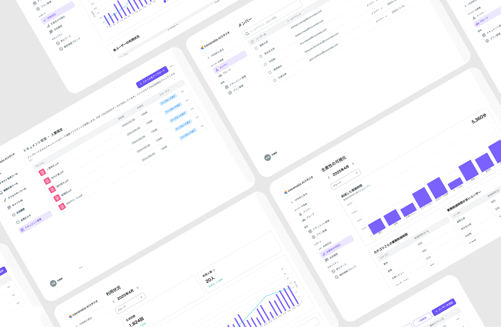
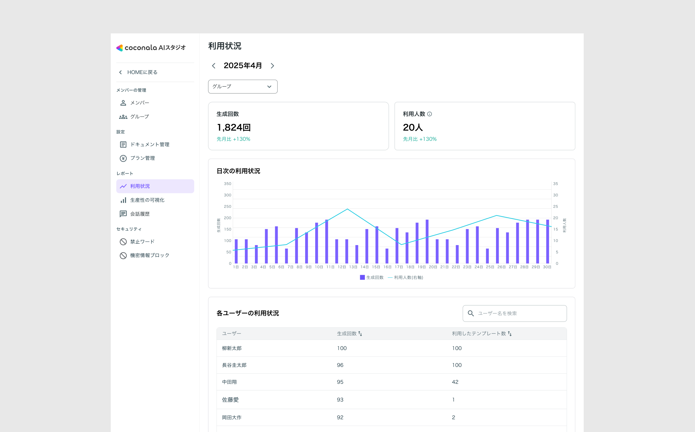
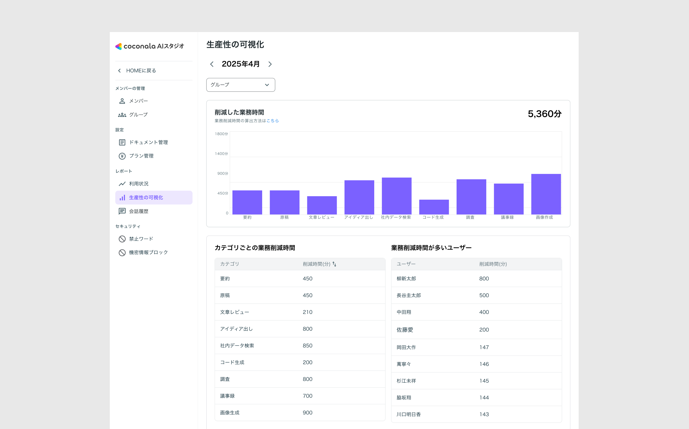
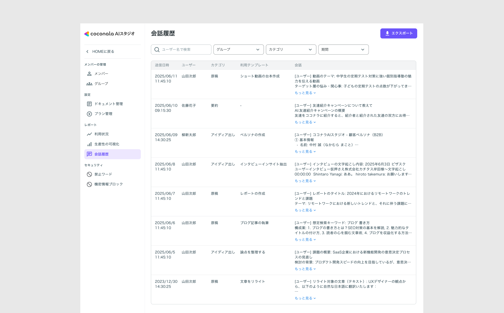

利用状況・生産性の可視化・会話履歴 3画面設計
AI Studio Analytics Design

はじめに
ココナラ AIスタジオは、企業がAIを業務に活用するための法人向けプロダクトです。当初、管理画面として作る予定だったのは「利用状況の確認」だけ、シンプルなスコープでプロジェクトがスタートしました。
しかし、エンタープライズ企業のDX担当者・部長・役員へのユーザーインタビューを重ねるうちに、管理者が本当に必要としていたのは「使っているかどうか」の確認ではなく、「どれだけ効果が出ているか」の証明と「誰がどう使っているか」の把握だということが明らかになりました。
この発見をもとに、利用状況・生産性の可視化・会話履歴の3画面構成へとスコープを再定義。本ページでは、ユーザーインタビューから設計判断に至るまでのプロセスをご紹介します。
アウトプット — 設計した3つの管理画面
ユーザーインタビューで定義したニーズをもとに、利用状況・生産性の可視化・会話履歴の3画面を設計。それぞれ「活用の把握」「効果の証明」「事例の横展開」という管理者の課題に対応している。各画面の設計意図は後半の「コア課題の解決に向けたUI設計」で詳述する。

01 利用状況
誰が・いつ・どれだけ使っているかを一目で把握

02 生産性の可視化
業務削減時間を定量化し、ROIを数字で証明

03 会話履歴
優秀な活用事例を把握し、社内へ横展開
目次
- 01プロジェクトの概要
- 02デザインプロセス
- 03コンセプト設計の概要
- 04コア課題の解決に向けたUI設計
- 05プロトタイプ
- 06終わりに
プロジェクトの概要
コンセプト
AIスタジオの活用状況と生産性インパクトを定量的に可視化し、管理者が社内展開・ROI提示を自信を持って行える管理機能を設計する。
AI導入効果が数字で証明できない
誰がどんな使い方をしているか把握できない
生産性削減時間の定量可視化
利用状況・会話履歴の可視化
管理者が社内展開・ROI提示を自信を持って行える管理機能
🧑💻 デザインプロセスを一貫してリード
〜1人デザイナーとして提案から実行まで担当〜
エンジニア中心のチームに1人デザイナーとしてアサイン。ユーザーインタビューの設計・実施から競合調査、要件定義、UI設計まで一貫して担当。インタビューで得た知見をチーム全体の共通認識にしながら、スコープの再定義と設計判断を主導しました。
仮説を素早く形にする
- ローコストで仮説を可視化
- 粗いワイヤーフレームを作成
- ステークホルダーへ早期共有
- FBをもとに方向性を確定
設計方針の根拠を収集する
- 国内外の管理ダッシュボードを調査
- UI・機能の比較整理
- 参考事例のスクリーンショット収集
- 設計方針へのインサイト反映
ユーザーのニーズを深掘る
- 関係者6名へのインタビュー設計・実施
- AI利用状況のヒアリング
- 課題と要望の定性的な把握
- ペインの整理
一貫性と品質を高める
- 高品質なUI設計・ブラッシュアップ
- ダッシュボード画面の設計
- 提案・合意形成
- 開発チームへの仕様共有
コンセプト設計の概要
1. ユーザーインタビューで「管理者が本当に見たいデータ」を特定
メーカー・製造・食品・自動車・医療など複数業界の大手企業に対し、DX担当者・部長・役員を対象としたユーザーインタビューをビザスク経由で実施（計10名）。AIスタジオの導入を判断する立場の方々が、「何を根拠に導入を決め、導入後に何を見たいのか」を深掘りすることが目的です。
商談の場では聞けない本音——意思決定の基準、業務の実態、ROIへの期待——を引き出すことで、管理画面に本当に必要な情報を定義しました。
属性
- 年齢：42歳 / 性別：男性
- 職種：DX推進マネージャー・情報システム部門
- 普段の業務：
- 社内AIツールの導入・運用管理
- 経営層へのDX進捗レポート
- 部門横断のAI活用推進
ユースケース
- 月次の利用状況レポート作成
- 役員向けROI報告資料の準備
- AI非活用部門への展開推進
AI活用の成果を数字で示し、自信を持って経営層に提案できる
削減時間・ROIが数値で確認できるため、予算申請の根拠資料をすぐに準備できる。
また、利用状況が把握できるため、活用が進んでいない部門への展開施策を具体的に立案できる。
管理コストが下がり、AI推進担当としての成果が可視化される。
2. 競合調査から管理ダッシュボードの設計パターンを整理
他社AI活用ツール・SaaSプロダクトの管理ダッシュボードを複数調査し、業界標準の設計パターンを把握しました。
3. 生産性削減時間の算出ロジックを設計
「どれだけ時間を削減できたか」を数字で示すためには、算出ロジックの設計が必要でした。チャットの会話内容をAIがカテゴリ（要約・原稿・調査・アイデア出しなど）に自動分類し、カテゴリごとに設定された「従来の所要時間」と「AI使用後の所要時間」の差分に利用回数を掛けて算出します。
削減時間の算出式
削減時間（分）＝（従来の所要時間 − AI使用後の時間）× 利用回数
計算例：調査カテゴリ
従来60分 → AI使用後10分
10回利用 → 500分削減
カスタマイズ対応
デフォルト値を設定しつつ、企業ごとに所要時間をカスタマイズ可能。業種・業務の実態に合わせた精度の高い算出を実現。
コア課題の解決に向けたUI設計
コア課題から解決策を検討
AI活用の効果を
数字で証明できない…
AIを導入していても「生産性が上がった」と定量的に示せない。役員への報告・稟議の場で根拠を持てず、次フェーズへの全社展開の意思決定が止まってしまう。
生産性の可視化ダッシュボード設計
業務削減時間をカテゴリ別・ユーザー別に定量表示。月次レポートをそのまま役員プレゼンに活用できる形式で設計し、ROI証明の手間をゼロに。
誰がどんな使い方を
しているか把握できない…
活用が進んでいる部門と止まっている部門の差が大きいが、管理者には見えない。よく使っているメンバーの事例を組織全体に横展開できない。
利用状況・会話履歴の可視化設計
ユーザー別・グループ別の利用状況を一覧化。会話履歴でよく使っているメンバーの用途を把握し、社内Slackや研修での活用事例共有をスムーズに。
1. 利用状況画面——「誰が・いつ・どれだけ使っているか」を一目で把握
KPIとして生成回数・利用人数を最上部に配置し、先月比の増減率も合わせて表示することで、管理者がトレンドを瞬時に把握できる設計にしました。日次グラフでは生成回数と利用人数の推移を重ねて表示し、利用が集中している日や落ち込んでいる期間を視覚的に確認できます。
各ユーザーの生成回数・利用テンプレート数を一覧で表示することで、「よく使っているメンバー」「ほとんど使っていないメンバー」を管理者が即座に把握。グループ・期間のフィルタリング機能も備え、部門単位・月単位での細かいモニタリングに対応しました。
2. 生産性の可視化画面——「本当に効果が出ているか」を定量的に証明
インタビューで最も強く求められていた「効果の定量証明」に応えるための核となる画面です。月間の業務削減時間を総量で大きく表示し、カテゴリ別・ユーザー別の内訳をグラフとテーブルで確認できる構成にしました。
カテゴリ別の削減時間では、どの業務でAIが最も貢献しているかを把握できるため、社内への活用推進のアクションに直結します。また、ユーザー別の削減時間ランキングにより、活用度の高いメンバーを特定し、会話履歴との連携で事例横展開をスムーズに行える設計にしました。
この画面の数値をそのまま役員プレゼン・稟議資料に転用できることを意識し、シンプルで読み取りやすいレイアウトを優先しました。
3. 会話履歴画面——「誰がいつどんな使い方をしているか」を把握・展開
活用事例の横展開を実現するための画面です。送信日時・ユーザー・カテゴリ・利用テンプレート・会話内容をリスト形式で表示し、管理者が特定ユーザーの利用パターンを素早く把握できます。
ユーザー名・グループ・カテゴリ・期間でのフィルタリング機能を搭載し、「よく使っているメンバーがどんな質問・用途で活用しているか」を具体的に確認できる設計にしました。優秀な使い方を社内Slackや研修で共有する際の一次情報源として機能します。
プロトタイプ
💻 利用状況・生産性の可視化・会話履歴 — 3画面のインタラクションプロトタイプ
実際の画面遷移・フィルタリング操作・ナビゲーションの動きをFigmaプロトタイプでご確認いただけます。
終わりに
🎯 インタビューがスコープを変えた
「利用状況だけ作ればいい」というスコープから出発し、ユーザーインタビューの知見をもとに3画面へ拡張する判断をしました。「なんとなく必要そう」ではなく、管理者が置かれた状況（役員への説明責任、社内展開の障壁）を具体的に理解したことで、何を作るべきかが明確になりました。デザイナーがリサーチを担い、設計の方向性を定義するプロセスの価値を実感したプロジェクトです。
💬 「証明できないと続けられない」という現実
インタビューを通じて印象的だったのは、どの企業の管理者も「効果を示せないと投資継続の判断が下りない」という同じ壁を抱えていたことです。プロダクトの機能を作るだけでなく、「価値を証明する仕組み」を設計することが、エンタープライズ向けSaaSにとっていかに重要かを学びました。削減時間の算出ロジック設計を通じて、UXデザインの範囲を超えてビジネスロジックにまで踏み込む経験ができました。
🧑💻 受注につながった手触り感
リリース後、本機能が導入の決め手となった受注案件が生まれました。自分の設計が商談の場で実際に機能し、事業数字に直結したという手触り感は、デザイナーとしての自分を大きく動機づける経験になりました。上流から関わり、データと設計をつなぐ役割を担い続けたいという気持ちが、一層強くなりました。